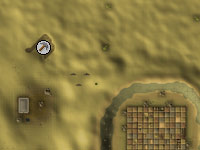

")
Mining - Mining Sites (Members)
Introduction
When it is time to extract more valuable ores, it is advisable that you study the locations of the various mines across RuneScape. Try to familiarise yourself with the usefulness of each one, as some are more popular than others. It will take longer to mine the same amount of ore in busier mines than it will in less populated ones.
Sites
The table below shows some of the sites that members can mine from. Some of these sites are quest rewards.
| Site | Location | Available Ore Rocks |
![[image: arandar mining site]](../../img/main/kbase/skills/mining/maps/mining_members_site_1.jpg "arandar mining site") |
South-west of Arandar | 18 Limestone |
![[image: western desert mining site]](../../img/main/kbase/skills/mining/maps/mining_members_site_2.jpg "western desert mining site") |
South of the Bandit Camp, Kharidian Desert | 28 Granite 32 Sandstone 4 Clay 2 Coal |
![[image: brimhaven mining site]](../../img/main/kbase/skills/mining/maps/mining_members_site_3.jpg "brimhaven mining site") |
South-west coast, Brimhaven | 6 Gold |
![[image: legends' guild mining sites]](../../img/main/kbase/skills/mining/maps/mining_members_site_4.jpg "legends' guild mining sites") |
South-west of Legends' Guild | 13 Coal 11 Iron |
![[image: south-east ardougne mining site]](../../img/main/kbase/skills/mining/maps/mining_members_site_5.jpg "south-east ardougne mining site") |
South of Ardougne Zoo | 4 Coal 11 Iron |
![[image: falador mining site]](../../img/main/kbase/skills/mining/maps/mining_members_site_6.jpg "falador mining site") |
West of Falador | 6 Tin 2 Copper 3 Iron 2 Coal |
![[image: keldagrim entrance mining site]](../../img/main/kbase/skills/mining/maps/mining_members_site_7.jpg "keldagrim entrance mining site") |
East of Rellekka | 2 Mithril 9 Iron |
![[image: lletya mining site]](../../img/main/kbase/skills/mining/maps/mining_members_site_8.jpg "lletya mining site") |
West of Lletya, Isafdar | 7 Adamantite |
![[image: pirates' hideout mining site]](../../img/main/kbase/skills/mining/maps/mining_members_site_9.jpg "pirates' hideout mining site") |
East of the Pirates' Hideout, Wilderness | 1 Iron 4 Mithril 1 Adamantite 3 Coal |
|  | South-west of Nardah, Kharidian Desert | 5 Gold |
![[image: port khazard mining site]](../../img/main/kbase/skills/mining/maps/mining_members_site_11.jpg "port khazard mining site") |
East of general store, Port Khazard | 2 Mithril 2 Tin 2 Copper |
![[image: fight arena mining site]](../../img/main/kbase/skills/mining/maps/mining_members_site_12.jpg "fight arena mining site") |
South-east of Fight Arena, Port Khazard | 9 Iron 2 Mithril 4 Clay 2 Copper 7 Tin 1 Coal |
![[image: rellekka mining site]](../../img/main/kbase/skills/mining/maps/mining_members_site_13.jpg "rellekka mining site") |
North-east of the helmet shop, Rellekka | 4 Clay 7 Coal 3 Silver |
![[image: uzer mining site]](../../img/main/kbase/skills/mining/maps/mining_members_site_14.jpg "uzer mining site") |
North-west of the Ruins of Uzer, Kharidian Desert | 7 Clay |
![[image: karamja mining site]](../../img/main/kbase/skills/mining/maps/mining_members_site_15.jpg "karamja mining site") |
North of Shilo Village, Karamja | 1 Iron 2 Mithril 2 Adamantite 1 Coal 1 Silver |
![[image: shilo village mining site]](../../img/main/kbase/skills/mining/maps/mining_members_site_16.jpg "shilo village mining site") |
North-west Shilo Village, Karamja | 7 Gem Rocks |
![[image: battlefield mining site]](../../img/main/kbase/skills/mining/maps/mining_members_site_17.jpg "battlefield mining site") |
Battlefield, south of West Ardougne | 3 Copper |
![[image: Desert Mining Camp mining site]](../../img/main/kbase/skills/mining/maps/mining_members_site_18.jpg "Desert Mining Camp mining site") |
Desert Mining Camp, south of Shantay Pass. You must have started The Tourist Trap. |
4 Copper 4 Tin 4 Coal 3 Iron |
![[image: Heroes' Guild mining site]](../../img/main/kbase/skills/mining/maps/mining_members_site_19.jpg "Heroes' Guild mining site") |
Beneath the Heroes' Guild, north of Taverley. You must have completed the Heroes' Quest. |
2 Mithril 2 Adamantite 11 Coal 2 Runite |
![[image: grand tree mine]](../../img/main/kbase/skills/mining/maps/mining_members_site_20.jpg "grand tree mine") |
Grand Tree Mine, through a trap door, under Grand Tree in the Tree Gnome Stronghold |
9 Clay 8 Iron 4 Silver 11 Coal 4 Gold 4 Mithril 3 Adamantite |
![[image: living rock caverns]](../../img/main/kbase/skills/mining/maps/mining_members_site_21.jpg "living rock caverns") |
Living Rock Caverns, down a rope at the northen end of the Dwarven Mine | 8 concentrated coal 4 concentrated gold Lots of living rock creatures |
| Complete Forgiveness of a Chaos Dwarf to gain access to Keldagrim North mine. | North of Keldagrim | 8 Gold 10 Adamantite 2 Runite |
| Complete Between a Rock... to gain access to Dondakan's mine. | North-west in Keldagrim's mines | 84 Gold |
| Begin Haunted Mine to gain access to the Haunted Mine. | In the Haunted Mine, south of Mort Myre Swamp | 2 Clay 7 Copper 12 Tin 15 Coal 8 Mithril 9 Adamantite |
| Complete Mourning's Ends Part II - The Temple of Light to gain access to the Mourner Tunnels. | Mourner Tunnels, in the western dark beast cave | 1 Runite |
| See Coal Trucks for a map of the coal trucks area. | Coal trucks, west of McGrubor's Wood | 19 Coal |
| See Mining Extra Features for a map of the Keldagrim mines. | Keldagrim | 5 Tin 2 Copper 14 Coal 4 Iron |
Click here to view the Mining FAQs

More articles in
Mining
|
|
|
Further Help
If this article does not help you, you may find the following sections of the RuneScape site helpful:
|
|